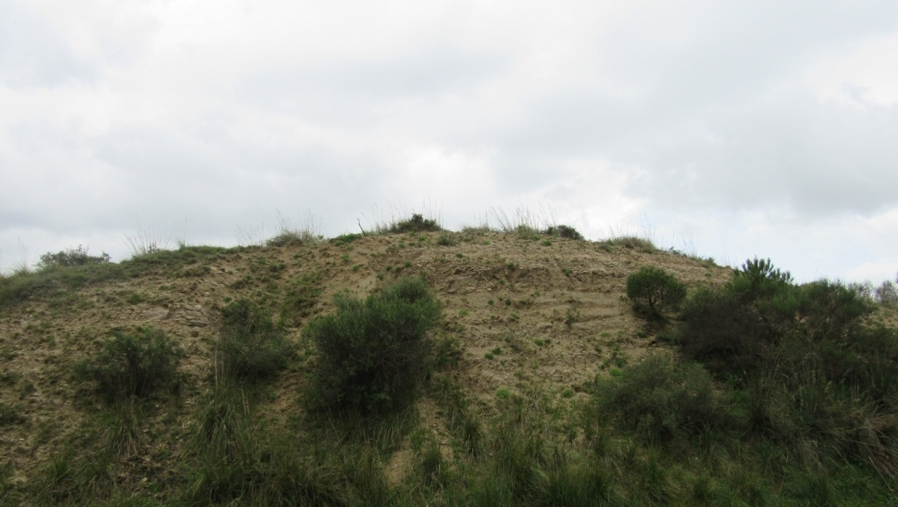

Trubi di Caltavuturo

ITALIANO - Affioramenti argillo‐marnosi bianco lattei a foraminiferi planctonici “Trubi”, caratterizzanti geologicamente il sollevamento della catena madonita. L’affioramento viene “tagliato” dalla S.S. 120 diversificando localmente il paesaggio. (Pliocene inf.)
ENGLISH - White marly clay milky foraminifers planktonic “Trubi” outcrops. They geologically characterize the lifting of the Madonie range. The outcrop is “cut” across by the S.S. 120, locally diversifying the landscape. (Pliocene inf.)